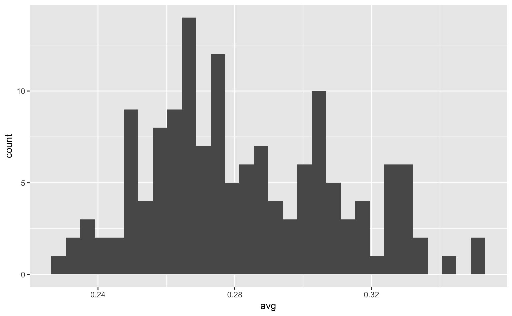
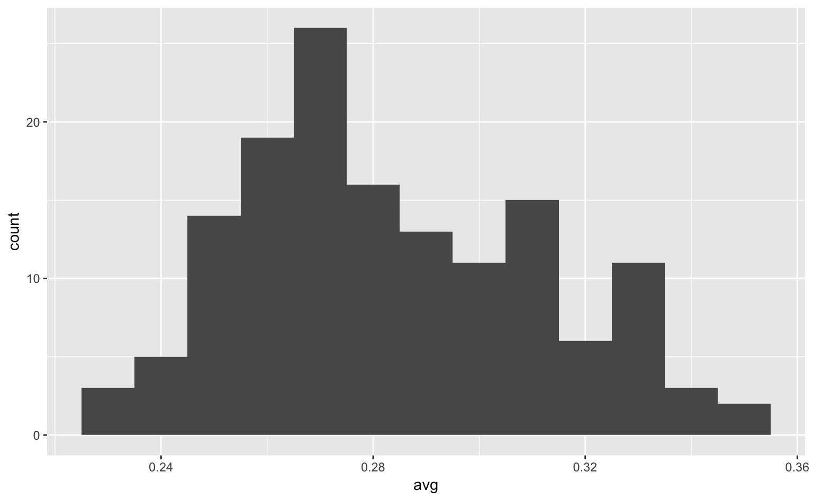
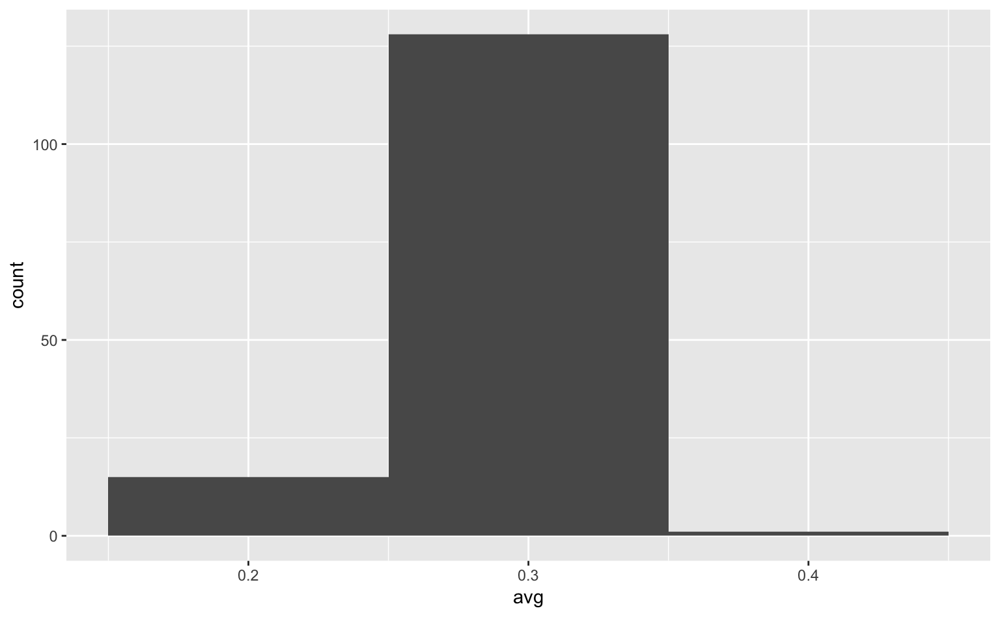
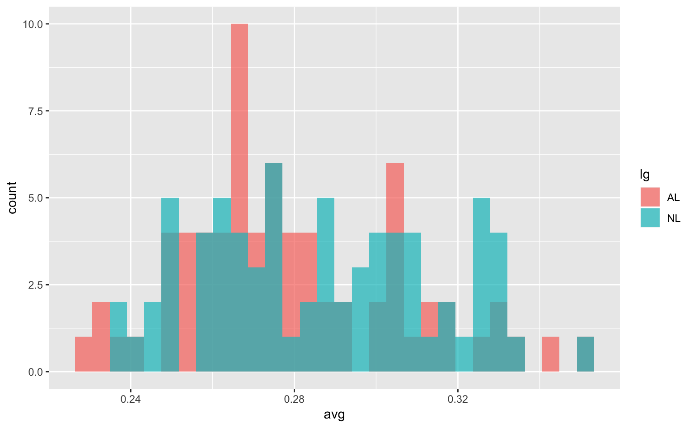
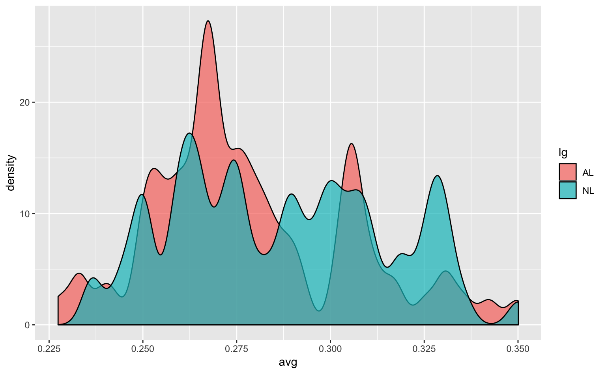
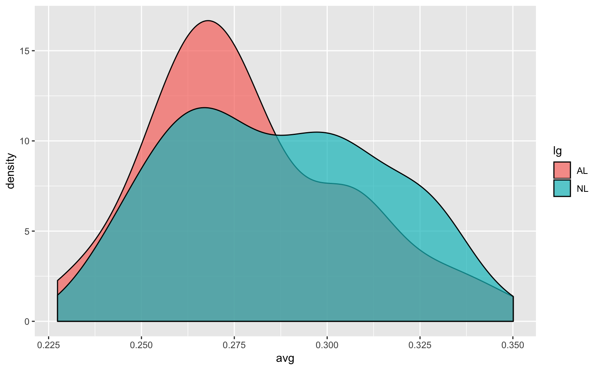
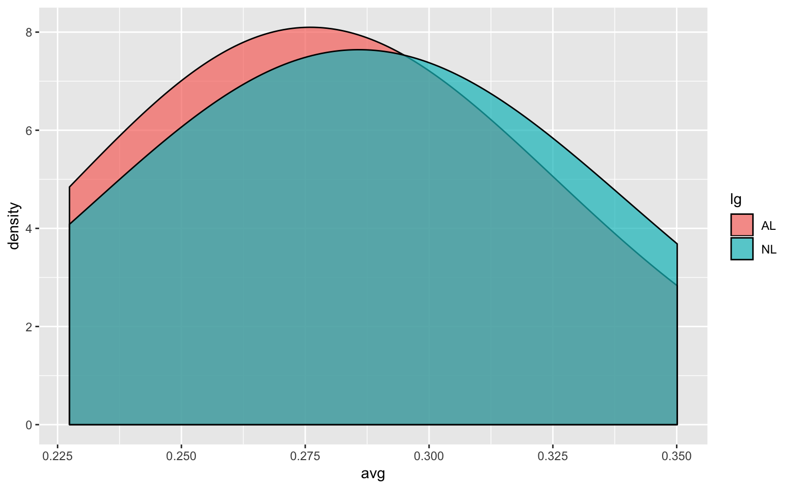
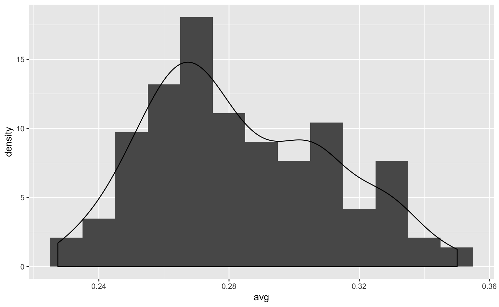
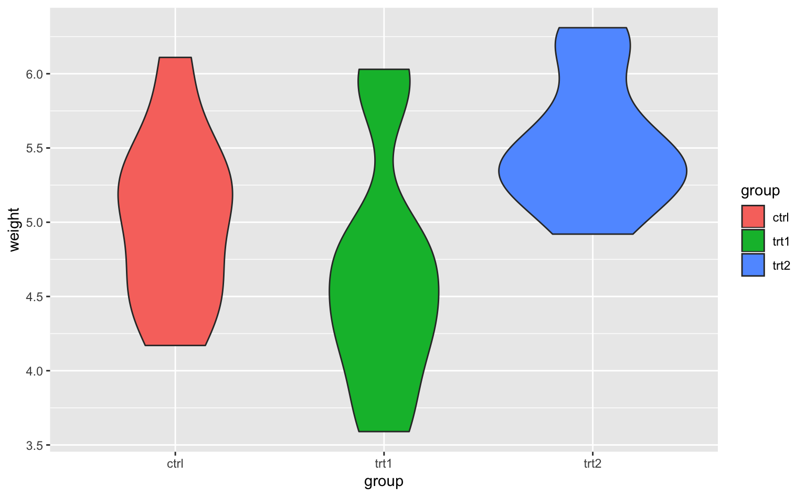

4 分布
chapter1の「アンスコムの例」で見たように、データの要約統計量（summary statistics；記述統計量、descriptive statisticsとも言う）だけに注目して、分布（distribution）を確認しないと痛い目にあうことがある。
4.1 ヒストグラム
library(ggplot2)tophitters2001（2001年MLBの打手データ）。ここでも以下の変数に注目する。
- avg：打率
ヒストグラムとは、X軸に変数の数値（連続変数）、Y軸に
ggplot(tophitters2001, aes(avg)) +
geom_histogram()## `stat_bin()` using `bins = 30`. Pick better value with `binwidth`.
なお、ビン（bin：ヒストグラムの1本1本の棒の幅）を調整することで、分布の印象が大幅に変わるということに注意してほしい。データ分析の際は、ビンの幅をいくつか試した上で、最も妥当そうな値を使うようにすると良い。参考に、ビンの幅を0.001、0.01、0.1にした場合の図を載せておく。
ggplot(tophitters2001, aes(avg)) +
geom_histogram(binwidth = 0.001) # binwidth = ...でビンの幅を設定
Figure 4.1: ビンが細すぎる場合のヒストグラム。
ggplot(tophitters2001, aes(avg)) +
geom_histogram(binwidth = 0.01) # binwidth = ...でビンの幅を設定
Figure 4.2: ビンが妥当なサイズののヒストグラム。
ggplot(tophitters2001, aes(avg)) +
geom_histogram(binwidth = 0.1) # binwidth = ...でビンの幅を設定Figure 4.3: ビンが妥当なサイズののヒストグラム。
では複数のヒストグラムを描いてみよう。
リーグ
ggplot(tophitters2001, aes(avg, fill = lg)) +
geom_histogram(position = "identity")## `stat_bin()` using `bins = 30`. Pick better value with `binwidth`.
ggplot(tophitters2001, aes(avg, fill = lg)) +
geom_histogram()## `stat_bin()` using `bins = 30`. Pick better value with `binwidth`.
ggplot(tophitters2001, aes(avg, fill = lg)) +
geom_histogram(position = "identity", alpha = 0.8)## `stat_bin()` using `bins = 30`. Pick better value with `binwidth`.
4.2 密度プロット
ヒストグラムに似たようなプロットがある。
ggplot(tophitters2001, aes(avg, fill = lg)) +
geom_density(alpha = 0.8) # デフォルトがposition = "identity"なので、geom_histogram(position = "identity")のように明示的に指示する必要がない
データの刻みが多すぎて、密度推定している意味があまりない。
ggplot(tophitters2001, aes(avg, fill = lg)) +
geom_density(alpha = 0.8, adjust = 0.25)
adjust = 1はデフォルトと同じ
ggplot(tophitters2001, aes(avg, fill = lg)) +
geom_density(alpha = 0.8, adjust = 1)
平滑化しすぎており、データの特徴が失われている。
ggplot(tophitters2001, aes(avg, fill = lg)) +
geom_density(alpha = 0.8, adjust = 4)
4.3 箱ひげ図
ヒストグラムや密度プロットとは異なり、要約統計量を示しつつ分布を示すようなプロットも存在する。その代表例は箱ひげ図（box plot; box-and-whisker plot）だろう。
全選手の打率の箱ひげ図
全データの分布を示す場合、yにのみ変数を対応づけてやれば良い。
ggplot(tophitters2001, aes(y = avg)) + # xがないので、y = ...と書く必要がある
geom_boxplot()
もう1つ変数を追加してみよう。
リーグ
リーグごとに箱ひげ図を描いてみよう。
ggplot(tophitters2001, aes(lg, avg)) +
geom_boxplot()ggplot(tophitters2001, aes(lg, avg, fill = lg)) +
geom_boxplot()
4.4 ヴァイオリンプロット
ヴァイオリンプロット（violin plot）というものがある。
ggplot(tophitters2001, aes(lg, avg, fill = lg)) +
geom_violin()
4.5 ストリッププロット
ストリッププロット（strip plot）というものがある。まずは完成品を見てほしい。
ggplot(tophitters2001, aes(x = lg, y = avg, fill = lg)) +
geom_violin() +
geom_boxplot(outlier.shape = NA, width = 0.2) +
geom_jitter(position = position_jitterdodge(jitter.width = 0.1, seed = 1)) +
stat_summary(geom = "point", fun.y = mean, shape = "diamond", color = "white", size = 2)